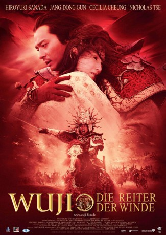

#6928 Wu ji - Die Reiter der Winde
 
 IMDB-Wertung: 5.6 / 10
IMDB-Wertung: 5.6 / 10  Metascore: 0
Metascore: 0 
Das Mädchen Quingcheng und der Junge Wuhuan sind die einzigen Überlebenden einer blutigen Schlacht. Er erpresst von ihr das Versprechen, seine Sklavin zu sein. Sie bricht es, womit sie sein Vertrauen in die Welt raubt. Eine Zauberin bietet dem armen Mädchen ein Leben in Luxus an, allerdings muss sie dafür auf Liebe verzichten. 20 Jahre später steht Quingcheng zwischen dem zum bösen Eroberer gewordenen Wuhuan, dem Reitergeneral Guanming und dessen Sklaven Kunlun. Eine gefährliche, schwierige Entscheidung steht an.
Jahr: 2005
Dauer: 97 Minuten
FSK: 12
Land: China Studio: Warner Bros.Tonspuren:
Untertitel:
Auflösung: 1080p (1920x824) Größe: 7772 MB
Genre: Action, Drama, Fantasy
Regisseur: Kaige Chen
Drehbuch: Kaige Chen
Soundtrack:
Darsteller:
- Dong-gun Jang als Kunlun
 Hiroyuki Sanada als General Guangming
Hiroyuki Sanada als General Guangming- Cecilia Cheung als Princess Qingcheng
 Nicholas Tse als Wuhuan
Nicholas Tse als Wuhuan Ye Liu als Snow Wolf
Ye Liu als Snow Wolf- Toby Leonard Moore als Wuhan
- Chen Hong als Goddess Manshen
- Qian Cheng als The Emperor
- Calvin Yu als Ye Li
- Chun-Xiao als Princess Qingcheng
- Xiaotong Guan als Young Qingcheng
- Shi Lei als Young Wuhuan
- Lu Peng als General in red
- Qian Po als One-Eye
Datei: X:\HD-Eastern-Classic(N-Z)\Wu ji - Die Reiter der Winde (2005, FSK12, 1920x824).mkv seit 08.09.2017
Festplatte: HD Eastern+Western
 Es gibt insgesamt 61 Filme in der Gruppe 'HD-Eastern-Classic(N-Z)'
Es gibt insgesamt 61 Filme in der Gruppe 'HD-Eastern-Classic(N-Z)'